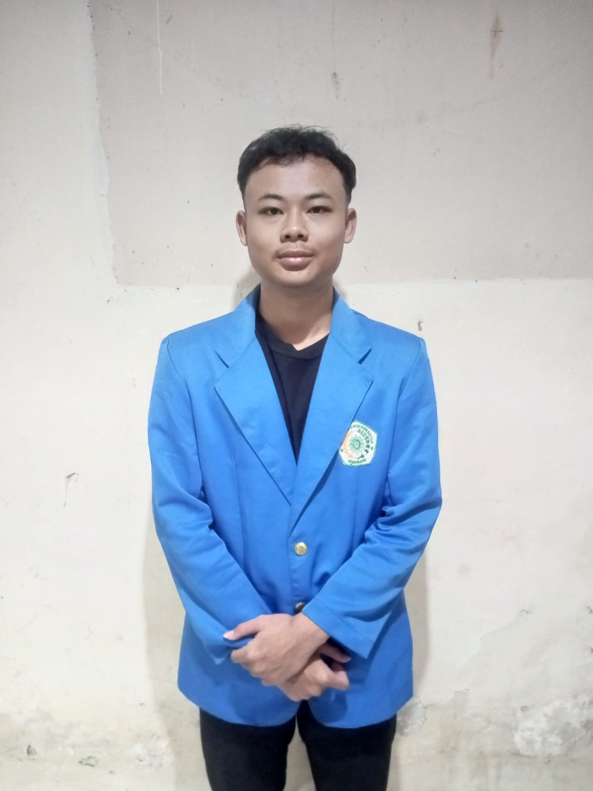

Nama: Muhammad Zakliya Noval Labib
NIM: 13182420106
Asal: Kesesi Pekalongan
Domisili: Pekalongan
Saya adalah mahasiswa Informatika yang aktif dalam himpunan mahasiswa (Himafor). Saat ini, saya juga sedang fokus mengembangkan inovasi melalui proyek PKM-KC (T-SYARA). Saya memiliki ketertarikan yang besar di bidang pengembangan perangkat lunak dan pengolahan data.
Cita-cita saya adalah menjadi orang yang sukses dan memberikan dampak positif di industri teknologi. Tiga peran yang menjadi fokus karier saya ke depan adalah: